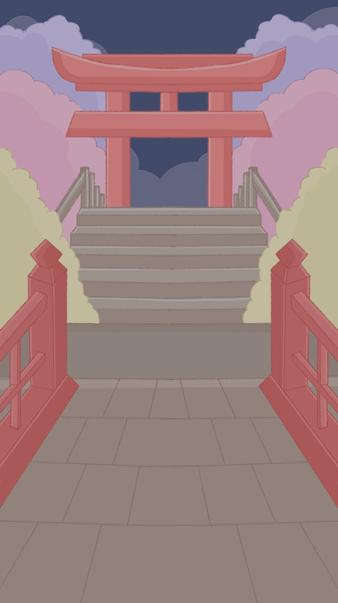

壹、摘要
某天,忍者潛入敵營執行任務,但在撤退時不慎被敵人發現,為了逃離,他決定使出忍
術擺脫追兵,玩家將協助忍者迎擊敵人,直至成功脫險。
貳、設計動機
ㄧ、設計緣由
因為本身喜歡輕鬆的小遊戲,且對忍者文化感到著迷,因此參考市面上的相關遊
戲後,決定以簡單的遊戲玩法和可愛畫風去發想,然後主要客群是12歲~30歲,希望
他們在產生多巴安的同時,可以了解和喜歡上忍者文化的魅力。
二、設計目標
忍者會去三個地方執行任務,但都剛好被發現,所以關卡設計上總共有三大關,
每關都有不同主題和敵人,玩家只要破十小關,就能進到下個世界,直到完成全部
關卡後,忍者就能成功逃脫。
參、遊戲介紹
ㄧ、遊戲類型
人數:單人
類型:2D平面、策略防守
平台:android
方向:直向
二、遊戲風格
以卡通「忍者哈特利」做參考,整體日式風格來設計。
三、角色設計
▲ 忍者和角色成功/失敗的樣子

 ◀ 敵人長頸女妖
◀ 敵人長頸女妖

 ◀
敵人唐傘小僧
◀
敵人唐傘小僧

 ◀ 敵人舞首
◀ 敵人舞首
四、道具&忍術設計

▲ 寶箱怪:不定時出現,擊敗可獲得大量金幣。

▲道具::隨機以藍、黃、紅色包裹出現。
• 火器(圖左):隨機消滅一個東西,可能是敵人也可能是寶箱或道具。
• 毒氣(圖中):包括忍者,所有東西中毒,遊戲失敗。
• 兵糧丸(圖右):讓敵人降落速度變慢3秒。

▲忍術:每個忍術一場遊戲只能使用一次,最多能選擇三個忍術上場。
• 火術(圖左):忍者噴火,針對場上所有的小粉做消滅。
• 分身術(圖中):召喚三個分身,消滅離地面最近的三個敵人。
• 苦無雨(圖右):消滅場上的所有敵人。
五、場景設計

六、遊戲玩法
只需使用一根手指,就能將敵人從牆上摔落,而玩家將繪製對應的符號協助忍者
擺出結印手勢迎擊敵人,直至成功脫險,目標是阻止敵人降落地面。

七、遊戲方式
•遊戲開始,忍者跑到中間,敵人從上往下降落。
•玩家繪製手勢成功,敵人摔下並掉落金幣。
•玩家繪製手勢失敗,敵人落地且遊戲失敗。
•敵人唐傘小僧:攻略難度低,頭上僅有一個符號。
•敵人舞首:攻略難度中,頭上通常有3~4個符號。
•敵人長頸女妖:攻略難度高,符號複雜。
•寶箱怪:頭上會連續出現各種不同的符號,都要畫完才能擊落獲得金幣,沒成功畫完則
不會獲得。
•道具:不定時以包袱的樣子出現,因為被包裹著,所以看不出來裡面的道具是什麼,然
後一樣用繪製符號獲得,成功後會掉落在地上,需要幫助時點選即可。
•忍術:在介面最底下可看到忍術按鈕,每個忍術一場遊戲只能使用一次,最多能選擇帶
三個忍術上場。
•金幣:擊敗敵人和寶箱怪可獲得,可以在商店購買忍術卷軸,解鎖更多特別的忍術。
•商店販賣的忍術:隱身術、變身術、水遁、土遁
•有限時3分鐘和無盡模式可選擇,會針對背景色做變化讓玩家了解現在的模式是什麼。
八、遊戲畫面示意圖

•S優勢:遊戲玩法簡單,題材特殊。
•W劣勢:遊戲過於單調,易導致玩家流失。
•O機會:可運用社群平台進行創意宣傳,提升曝光度。
•T威脅:遊戲市場競爭激烈,需在推出後快速建立玩家基礎。
設計:
1. 封面、Logo設計
2. 前導動畫
3. 忍者:角色/動畫設計
4. 妖怪:角色//動畫設計
5. 道具、忍術、商店設計
6. 場景設計
7. 介面/按鈕設計
8. 教學示意圖
程式:
1. 隨機怪物
2. 手勢偵測套件
3. 單機版資料庫


 介面參考:Magic Touch
介面參考:Magic Touch
 玩法參考:Google Halloween
玩法參考:Google Halloween
玖、遊戲簡介片